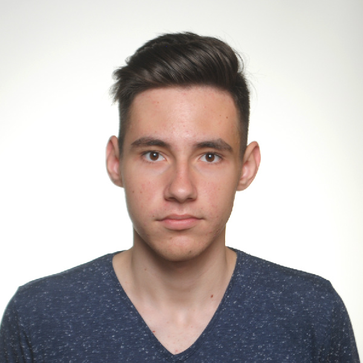

Intro
Доброго дня! Моє імʼя Мирослав, мені 19 років, я родом з міста Дніпро. Навчаюся в Київському політехнічному інституті на 2 курсі. У вільний від навчання час займаюсь вивченням програмування на платформі .NET. Цікавлюсь автомобілями та усім, що з ними повʼязано (змагання, водіння, ремонт тощо).
About me
Я народився та виріс в місті Дніпро. Зараз навчаюся в Київському політехнічному інституті на 2 курсі спеціальності "Компʼютерні науки". Володію трьома мовами: українською, російською та англійською. Обожнюю подорожувати, проте останні декілька років не було нагоди відвідати іншу країну. Обожнюю автомобілі, бо з дитинства ними захоплювався. Також подобається кататися на BMX, раніше у мене був інтернет-магазин та майстерня з ремонту їх, проте вирішив, що варто рухатись далі. У вільний час намагаюся вивчати щось корисне, або займатися одними з своїх хобі. Більше цікавинок про мене можна дізнатися у розділі "My life".
My life
My experience
Інтерес до програмування зʼявився під час навчання в ліцеї, там ми вивчали програмування на мові Java. Проте надалі я нею не користувався, бо у інституті ми почали вичення мов С та С++. Також намагався вивчати Python, але не сподобався синтаксис і було не зручно після строготипізованих мов, тож я вирішив вивчати С# та програмування на платформі .NET. Сподіваюся, що даний курс дасть мені достатньо знань для подальшого працевлаштування. Загалом все що я створював було направлене на навчання, а саме лабораторні роботи, курсові тощо. Останні декілька місяців зʼявилась нагода створювати щось для свого інтересу, проте щось чим я б міг пишатися ще не створив через брак знань та досвіду.